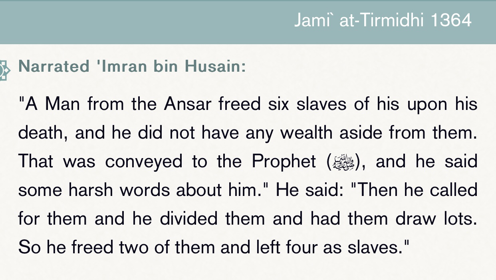
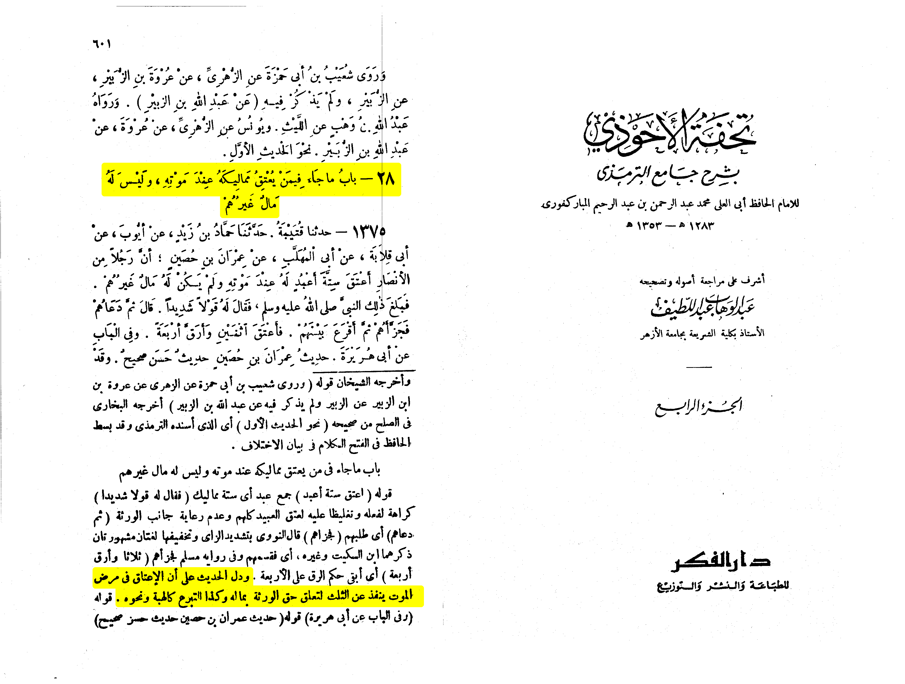
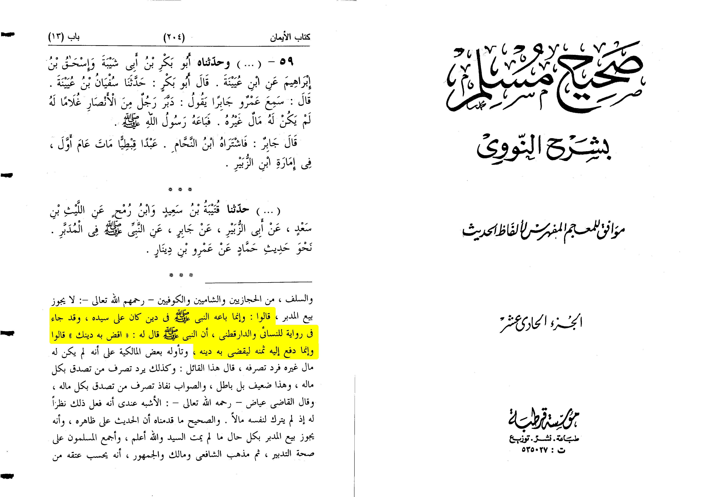

Refuting this ⬇️

So the argument is why would the prophet be against freeing slaves
Answer:
The thing is he wasn’t against that this hadith is a specific context of a man wrote his death
and didn’t have any money and wanted to free 6 of his slaves, so the man doesn’t get punished enough
the prophet shows it is a bad thing and pays the rest of them as slaves and the other 2 are freed.
You would say how is that just well because not anyone can free slaves only if he doesn’t have anymore
debt it isn’t also just for him to leave a death will without any money and free all his slaves
islam totally advocates for slave freement except in this context
“Chapter: What Has Been Related About One Who Frees His Slaves When He Dies, While He Has No Wealth
Aside From Them
And in the hadith there is evidence that manumating slaves at the death bed only frees 1/3 of them
for the inheritors right on him”
Tuhfat Al-Ahwadhi Bi Sharh Jamiʿ Al-Tirmidhi vol.IV, pp.601 hadith:1375
Islam made a lot of punishements and greatest rewards is freeing a slave even if he was a non muslim
Done.

There is another wording of the hadith also found in bukhari 2491 they all point to this exact
hadith lets see what an-nawawi said , reminder the owner didn’t have any other money
Sahih al-Bukhari 2492
Narrated Abu Huraira:
The Prophet (ﷺ) said, "Whoever manumits his share of a jointly possessed slave, it is imperative
for him to get that slave manumitted completely by paying the remaining price, and if he does
not have sufficient money to manumit him, then the price of the slave should be estimated justly,
and he is to be allowed to work and earn the amount that will manumit him (without overburdening him)".
Imam an-nawawi writes:
"The malikis and Hanafis and the majority of the salaf see that buying a manumitted slave is
impermissible they respond to this hadith by saying that the prophet only sold him because of a
debt on his master and it was said so in a narration in nisa'i and Daraqutni so he sold his slave
only to push off his debt"
[Al-Minhaj fi Sharh Sahih Muslim by an-nawawi volume 11, pg.204]

This is a special condition on which a slave is freed after the death of his master but if not you can’t
buy or sell him he is free, people may object by saying but the freed slave writes ? What about the
erson who had the debt, and what about the inheritors write this is a special case as we said it is
mentioned in sharh Sahih muslim 997 C that this slave was freed after we must also put in mind that
the form of manumitting slaves isn’t present in any form of ideology except Islam